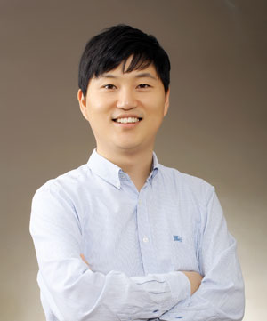

People
Professor

Jae Hwa Lee Ph.D.
Professor
Department of Mechanical Engineering, UNIST
- Office
- Rm #401-7, Eng. Bldg. 5 (#112)
- Tel
- +82-52-217-2350 (Fax: 2459)
- jhlee06@unist.ac.kr
Education
- Ph.D., Department of Mechanical Engineering, KAIST, Aug. 2012
- M.S., Department of Mechanical Engineering, KAIST, Feb. 2008
- B.S., Department of Mechanical Engineering, Pusan National Univ., Feb. 2006
Experience
- Professor, Department of Mechanical Engineering, UNIST, Sep. 2023 - Present
- Associate Professor, Department of Mechanical Engineering, UNIST, Sep. 2018 - Aug. 2023
- Assistant Professor, School of Mechanical, Aerospace and Nuclear Engineering, UNIST, July 2014 - Aug. 2018
- Visiting Professor, Department of Mechanical & Aerospace Engineering, UCLA, Sep 2021 - Aug. 2022
- Postdoctoral Research Associate, School for Engineering of Matter, Transport and Energy, Arizona State Univ., Jan. 2013 - Jun. 2014
- Visiting Scholar, School for Engineering of Matter, Transport and Energy, Arizona State Univ., Dec. 2012
- Postdoctoral Researcher, Department of Mechanical Engineering, KAIST, Sep. 2012 - Nov. 2012
- Reseach Assistant, Department of Mechanical Engineering, KAIST, Feb. 2008 - Aug. 2012
Professional Activities
- Member of American Physical Society
- Member of Korean Society of Mechanical Engineers
- Member of Korean Society of Visualization
- Member of Korean Society for Computational Fluids Engineering
- Advisory Committee of International Symposium on Turbulence and Shear Flow Phenomena
- Advisory Committee on Asian Symposium on Computational Heat Transfer and Fluid Flow
- Associate Editor in Journal of Mechanical Science and Technology (2023 - Present)
Research Interest
- Turbulence Physics and Modeling
- Numerical Method and Artificial Intelligence (AI)
- Direct Numerical Simulation (DNS) and Large-Eddy Simulation (LES)
- Turbulence Control: Drag Reduction, Flow-Induced Noise and Vibration
- Incompressible and Compressible Flows
- Multi-Phase Flows with Heat Transfer and Phase Change under Extreme Conditions
- Fluid-Structure Interaction (FSI) Problem
Honor and Award
- April 2026, 가산학술상, 대한기계학회
- Dec. 2025, 교육부 장관상
- Nov. 2025, Best Paper Award, Annual Meeting of Korean Soc. Comput. Fluids Eng. (KSCFE), Korea
- 2024, 2025, Outstanding Contribution Award, JMST
- Nov. 2019, Best Paper Award, Annual Meeting of Korean Soc. Comput. Fluids Eng. (KSCFE), Korea
- April 2019, Best Paper Award, Annual Meeting of Korean Soc. Mech. Eng. (KSME), Korea
- Nov. 2018, Best Paper Award, Annual Meeting of Korean Soc. Comput. Fluids Eng. (KSCFE), Korea
- Aug. 2018, Best Paper Award, The 10th National Congress on Fluids Eng. (NCFE), Korea
- April 2018, Best Paper Award, Annual Meeting of Korean Soc. Mech. Eng. (KSME), Korea
- May 2017, Best Paper Award, Annual Meeting of Korean Soc. Mech. Eng. (KSME), Korea
- Dec. 2016, Excellent Paper Award (1st prize), Annual Meeting of Korean Soc . Visualization, Korea
- April 2015, Excellent Paper Award (1st prize), Annual Meeting of Korean Soc. Visualization, Korea
- Nov. 2014, Dec. 2017, Excellent Paper Award (2nd prize), Annual Meeting of Korean Soc. Visualization, Korea
- Feb. 2012, Outstanding Research Award, KAIST (BK21), Korea
- Dec. 2010, Best Paper Award, Annual Meeting of Korea Soc. Mech. Eng . (KSME), Korea
- Sep. 2009 ~ Aug. 2010, National Research Scholarship, Korea Research Foundation (KRF), Korea